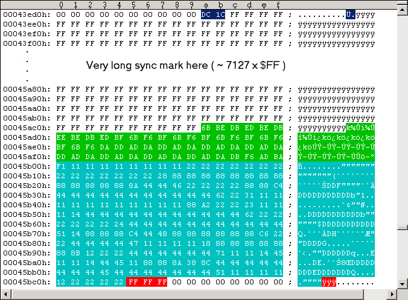

Main Index Routine Index Memory IndexTrack 36 Key Sector details
The following Figure shows the contents of Track 36 inside a G64 image.
Figure #1: Track 36 of my original Pirates disk side 1 (PAL).The above track image starts at offset $043EDA with 2 bytes track length ($1CDC = 7388 bytes; this varies) followed by the actual track data. The track consists of a small data field surrounded by a track filling Sync mark. The track data is arranged such that it starts with the very long sync mark (about 7127 x $FF) and ends with the sector data: 54 data bytes (marked green) and about 195-199 zeros (marked cyan and red). Those zeros are read as random bytes and their number may vary in different dumps. Thus the sector data always looks different! The number of green and cyan marked bytes is exactly 250 in the figure. Sometimes Track 36 is not recognized by the $0558 routine in WinVice, if you are running an unmodifed disk image. As already described in that routine the Key Sector data must not be longer than 253 bytes in order to be recognized as such. I have seen this length varying from dump to dump (usually 250-254 but up to 261-262 on second generation dumps). If the Key Sector is more than 253 bytes long we are in trouble. So a length of about 250 bytes should be safe: Simply overwrite all Key Sector bytes at positions >250 with $FF (red marked bytes in Figure #1 above - your number may/will be different!). The following Figure #1b shows the red marked fix:

Figure #1b: Track 36 Key Sector length fix.The $0480 routine retrieves 35 keys from this encrypted Key Sector. Each of those keys corresponds to a separate Track and the length of a hidden sector (number of $7B's) located on it. This lengths are checked later in a $0415 routine addon. The $0480 routine ends by running into the $050D routine (wrong Bit rate set), counting the byte-readys (->[$0150]) until the next Sync mark is found (the long one). Integrity checks in a $0415 routine addon require this value to be between 0 and $20 (8bit counter overflow). As WinVice currently does not support such Bit rate changes within a Track (in the way we need it here), the byte-ready count will most likely result in a random value. At this time we need to apply a patch as we want to play the game in WinVice.